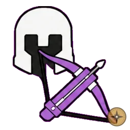
Sir GalahadAncienne démo et wiki
Après un uptilt, le coup de pied aérien est remplacé par un direct chargé de Haki.
ATLAS DES MERS
Cartes de Haki, mers, extraits et notes de recherche.
Movie 3 montre quatre emplacements Spiritual sur R, T, G et Z. L’écran Max-Potential montre quatre cases : Fierce, Tactic, Agile et Extra (Title). Voir les deux captures et les configurations.
Armement agit notamment sur la posture et la mêlée, Observation sur la lecture de l’adversaire et l’esquive, et le Haki des Rois sur l’infusion et le contrôle. Les posters Agile, Fierce et Tactic modifient la mobilité, l’attaque et la défense. Les effets et chiffres ci-dessous correspondent aux versions décrites par les sources.


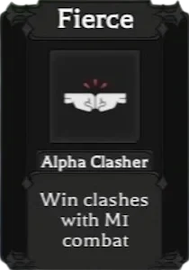
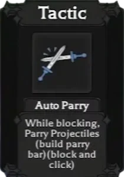

Sir GalahadAncienne démo et wikiAprès un uptilt, le coup de pied aérien est remplacé par un direct chargé de Haki.
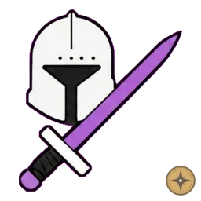
Sir GawainAncienne démo et wikiAugmente la résistance de posture de 20 % dans la démo.
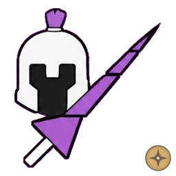
Sir LancelotAncienne démo et wikiÉlargit la zone du downslam, augmente les dégâts de posture et projette la cible plus haut.
 Sir LannisterAncienne démo
Sir LannisterAncienne démoBonus de dégâts de combat de 4 % dans la version montrée.
 Bri O. TarthAncienne démo
Bri O. TarthAncienne démoRepousse l’attaquant qui brise ta garde avec un coup physique.
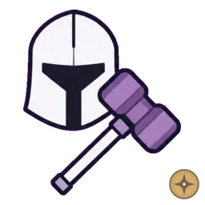
Sie G. FriedAncienne démoLe troisième coup lourd déclenche une onde qui repousse. Le rapprochement avec Sir Sigurd reste à vérifier.
 Sir SigurdNom recensé
Sir SigurdNom recenséEffet propre inconnu. Les notes du projet évoquent un lien possible avec Sie G. Fried.
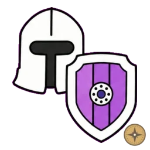
Sir StifmeisterNom recenséEffet inconnu. Le rapprochement avec Ryuo reste une hypothèse du projet.
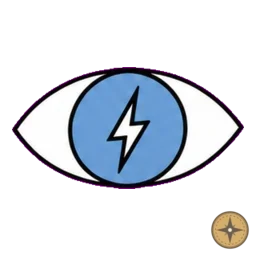
Opp E. HeimerAncienne démo et wikiFuture Sight accorde jusqu’à huit esquives dans la démonstration.
 New D. tonAncienne démo et wiki
New D. tonAncienne démo et wikiUn repère apparaît avant la dernière attaque de base. La fiche invite à frapper à la fin de l’effet.
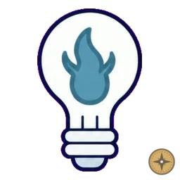
Ein S. TeinAncienne démo et wikiÉvalue la force de l’adversaire. L’ancienne présentation affiche certains attributs et jauges.
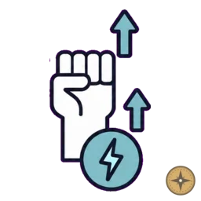
Dar D. WinAncienne démo et wikiDétecte la présence ou la position des adversaires.
 Sigma FreudAncienne démo
Sigma FreudAncienne démoAllonge de 20 % la fenêtre d’esquive des dashs et des evades dans la version présentée.
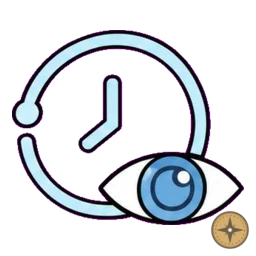
Tom E. DisonAncienne démoTransforme l’evade en contre avec saisie et coup de poing. Un effet proche est attribué à Raman par le wiki récent.
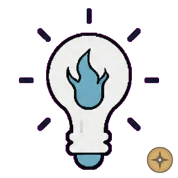
KanadaWiki post-Movie 3Permet de jauger la force adverse. Effet proche d’Ein S. Tein.
 KhwarizmiWiki post-Movie 3
KhwarizmiWiki post-Movie 3Détecte la présence des adversaires. Effet proche de Dar D. Win.
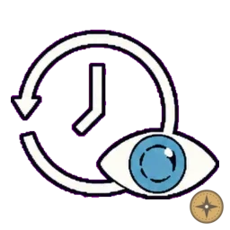
RamanWiki post-Movie 3Change l’esquive en contre avec saisie, coup et projection.
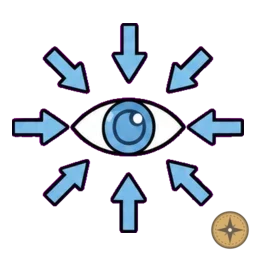
TaekwondoWiki post-Movie 3La garde permet d’éviter des attaques en consommant de l’endurance.
 Xanda D. GoatAncienne démo
Xanda D. GoatAncienne démoInsuffle le Haki des Rois dans les attaques. Le wiki récent donne un effet proche à Alexander D. Great.
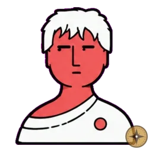
Alexander D. GreatWiki post-Movie 3Imprègne le combat de la volonté du Haki des Rois. Le lien exact avec Xanda D. Goat reste à confirmer.
 Julius C. ZarAncienne démo et wiki
Julius C. ZarAncienne démo et wikiImmobilise des adversaires proches. La description de démo annonce une défense réduite de 15 %. Les cibles exactes du malus restent à vérifier.
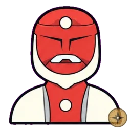
Geng D. KhanAncienne démoUne fois mis à terre, déclenche une onde qui neutralise les attaquants pendant dix secondes dans l’ancienne description. Aussi noté Geng D. Kan.
 Nap O. LeonAncienne démo
Nap O. LeonAncienne démoLe dégainage donne un bonus de vitesse de dix secondes. Le wiki récent recense Napoleon sans décrire son effet.
 Go D. ZillaAncienne démo et wiki
Go D. ZillaAncienne démo et wikiÉtourdissait les cibles, stoppait les modes actifs et imposait un délai global aux actions dans la description de la démo. Aussi appelé Godkilla dans nos notes.
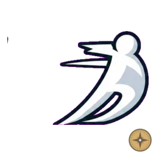
Flash DashGuide communautaireAccélère le dash et permet d’en contrôler la direction.
 Geppo MasterGuide communautaire
Geppo MasterGuide communautaireAjoute deux sauts Geppo dans l’ancienne description.
Permet de rebondir sur les murs.
Ajoute un tacle glissé pendant un déplacement rapide.
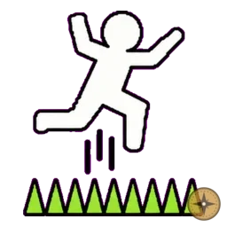
JumperGuide communautaireAugmente la portée du double saut.
Augmente la portée du dash. Le wiki récent emploie aussi Mr Widestep.
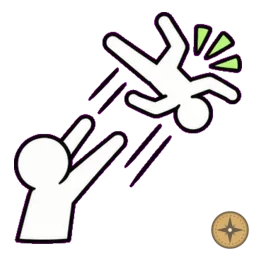
Sir PitcherGuide communautairePermet une poursuite en Geppo Dash après avoir projeté une cible.
Le down tilt ouvre une chaîne d’attaques de base sans briser la garde selon l’ancienne description.
Donne l’avantage dans les clashes d’attaques de base selon l’ancien guide.
Le dernier M1 ferme la distance puis projette l’adversaire vers le haut.
 Full StackGuide communautaire
Full StackGuide communautaireUne rupture de garde au coup puissant ouvre une chaîne complète.
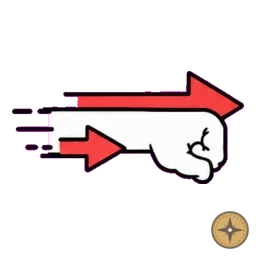
Faster PunchGuide communautaireAccélère les coups puissants et augmente leur portée.
 Strong PuncherGuide communautaire
Strong PuncherGuide communautaireFavorise la rupture de garde et le recul au coup puissant.
Augmente la zone touchée par le downslam. Aussi écrit Downg God.
Permet aux tirs de punir des dashs dotés d’une fenêtre d’invulnérabilité. Le classement de la carte varie selon les listes.
 Auto ParryGuide communautaire
Auto ParryGuide communautairePermet de parer des projectiles en gardant.
Modifie la consommation de jauge de parade. L’ancienne formulation ne précise pas l’unité ni la référence de la valeur.
 Quick ParryGuide communautaire
Quick ParryGuide communautaireRéduit le temps de récupération après une parade de 0,5 seconde selon l’ancienne description.
 Evade GodGuide communautaire
Evade GodGuide communautaireModifie la réaction au recul et à l’étourdissement au sol. Détail de déclenchement à vérifier.
 ParryinganGuide communautaire
ParryinganGuide communautaireAllonge la fenêtre de parade. La valeur 0,2 est citée dans l’ancienne description.
Index du Haki · Relevé de l’ancienne démo · Combat Potentials · Archives des effets
La quatrième case de Max-Potential affiche « Title » dans Movie 3. Le choix dépend du titre débloqué par ton personnage.

Le catalogue reprend les entrées de RELL Seas Wiki après Movie 3. Les thèmes décrivent le pouvoir associé au fruit. Des noms, familles et listes diffèrent dans les sources plus anciennes.
 DarkCatalogue communautaire
DarkCatalogue communautaireThème associé : obscurité. Les mouvements, dégâts, conditions d’obtention et éventuels éveils demandent une source de gameplay pour ce fruit.
 FlameCatalogue communautaire
FlameCatalogue communautaireFlame Fist est un projectile de l’arbre Flame. La fiche relève deux passifs, Bigger Impact et Faster Fist, et les nœuds Pyro Laser, Flame Torrent, Pyro Eruption, Ignition Scatter et Flame Mode. L’éveil et les taux restent inconnus. Fiche et démonstrations.
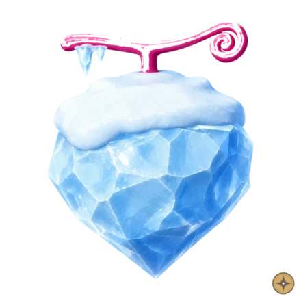
IceCatalogue communautaireThème associé : glace. Les mouvements, dégâts, conditions d’obtention et éventuels éveils demandent une source de gameplay pour ce fruit.
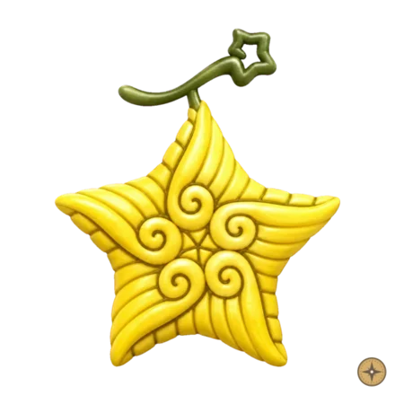
LightCatalogue communautaireThème associé : lumière. Les mouvements, dégâts, conditions d’obtention et éventuels éveils demandent une source de gameplay pour ce fruit.
 MagmaCatalogue communautaire
MagmaCatalogue communautaireThème associé : magma. Les mouvements, dégâts, conditions d’obtention et éventuels éveils demandent une source de gameplay pour ce fruit.
 RumbleCatalogue communautaire
RumbleCatalogue communautaireThème associé : foudre. Les mouvements, dégâts, conditions d’obtention et éventuels éveils demandent une source de gameplay pour ce fruit.
 SandCatalogue communautaire
SandCatalogue communautaireThème associé : sable. Les mouvements, dégâts, conditions d’obtention et éventuels éveils demandent une source de gameplay pour ce fruit.
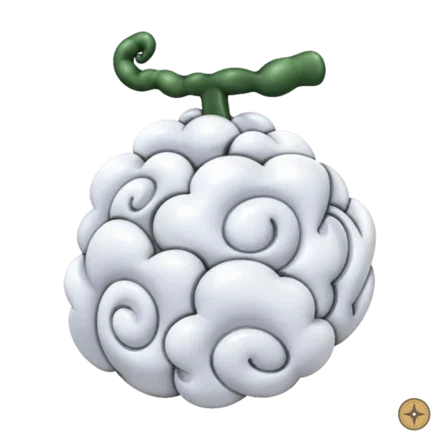
SmokeCatalogue communautaireThème associé : fumée. Les mouvements, dégâts, conditions d’obtention et éventuels éveils demandent une source de gameplay pour ce fruit.
 BarrierCatalogue communautaire
BarrierCatalogue communautaireThème associé : barrières. Les mouvements, dégâts, conditions d’obtention et éventuels éveils demandent une source de gameplay pour ce fruit.
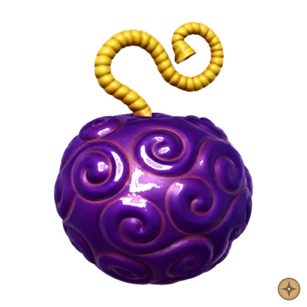
BombCatalogue communautaireThème associé : explosions. Les mouvements, dégâts, conditions d’obtention et éventuels éveils demandent une source de gameplay pour ce fruit.
 ChopCatalogue communautaire
ChopCatalogue communautaireThème associé : séparation du corps. Les mouvements, dégâts, conditions d’obtention et éventuels éveils demandent une source de gameplay pour ce fruit.
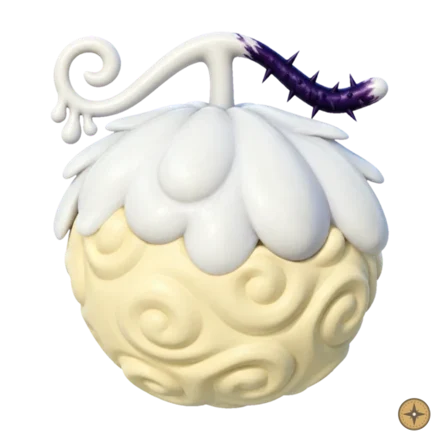
DoughCatalogue communautaireThème associé : pâte extensible. Les mouvements, dégâts, conditions d’obtention et éventuels éveils demandent une source de gameplay pour ce fruit.
 GravityCatalogue communautaire
GravityCatalogue communautaireThème associé : gravité. Les mouvements, dégâts, conditions d’obtention et éventuels éveils demandent une source de gameplay pour ce fruit.
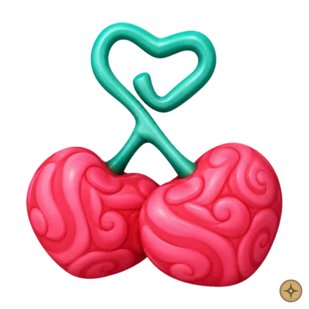
LoveCatalogue communautaireThème associé : amour et pétrification dans l’inspiration. Les mouvements, dégâts, conditions d’obtention et éventuels éveils demandent une source de gameplay pour ce fruit.
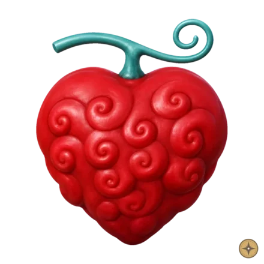
OperationCatalogue communautaireThème associé : zone d’opération. Les mouvements, dégâts, conditions d’obtention et éventuels éveils demandent une source de gameplay pour ce fruit.
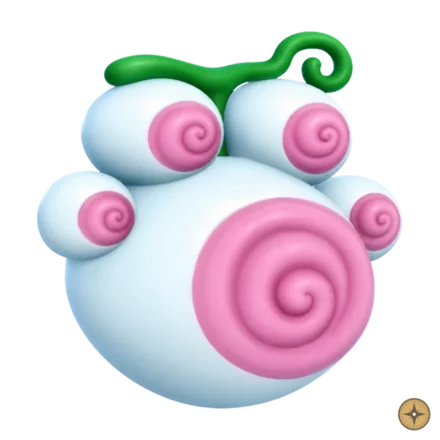
PawCatalogue communautaireThème associé : répulsion. Les mouvements, dégâts, conditions d’obtention et éventuels éveils demandent une source de gameplay pour ce fruit.
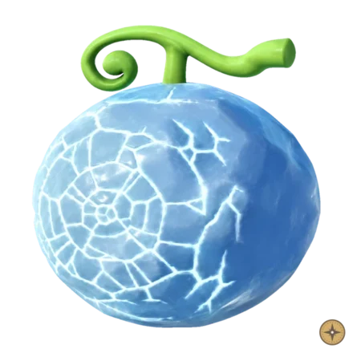
QuakeCatalogue communautaireThème associé : secousses. Les mouvements, dégâts, conditions d’obtention et éventuels éveils demandent une source de gameplay pour ce fruit.
 ReviveCatalogue communautaire
ReviveCatalogue communautaireThème associé : résurrection dans l’inspiration. Les mouvements, dégâts, conditions d’obtention et éventuels éveils demandent une source de gameplay pour ce fruit.
 RubberCatalogue communautaire
RubberCatalogue communautaireThème associé : élasticité. Les mouvements, dégâts, conditions d’obtention et éventuels éveils demandent une source de gameplay pour ce fruit.
 SoulCatalogue communautaire
SoulCatalogue communautaireThème associé : âmes. Les mouvements, dégâts, conditions d’obtention et éventuels éveils demandent une source de gameplay pour ce fruit.
 StringCatalogue communautaire
StringCatalogue communautaireThème associé : fils. Les mouvements, dégâts, conditions d’obtention et éventuels éveils demandent une source de gameplay pour ce fruit.
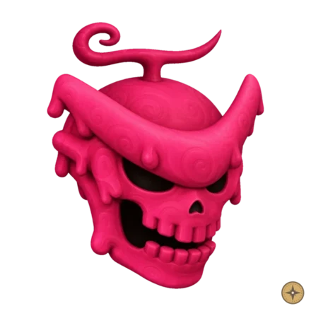
VenomCatalogue communautaireThème associé : poison. Les mouvements, dégâts, conditions d’obtention et éventuels éveils demandent une source de gameplay pour ce fruit.
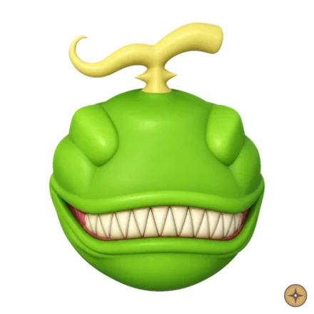
AllosaurusCatalogue communautaireThème associé : allosaurus. Les mouvements, dégâts, conditions d’obtention et éventuels éveils demandent une source de gameplay pour ce fruit.
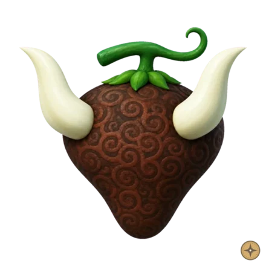
BisonCatalogue communautaireThème associé : bison. Les mouvements, dégâts, conditions d’obtention et éventuels éveils demandent une source de gameplay pour ce fruit.
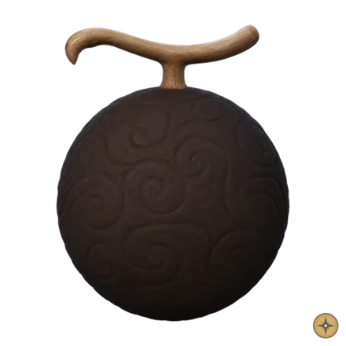
FalconCatalogue communautaireThème associé : faucon. Les mouvements, dégâts, conditions d’obtention et éventuels éveils demandent une source de gameplay pour ce fruit.
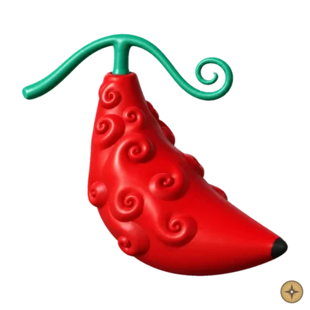
GiraffeCatalogue communautaireThème associé : girafe. Les mouvements, dégâts, conditions d’obtention et éventuels éveils demandent une source de gameplay pour ce fruit.
 LeopardCatalogue communautaire
LeopardCatalogue communautaireThème associé : léopard. Les mouvements, dégâts, conditions d’obtention et éventuels éveils demandent une source de gameplay pour ce fruit.
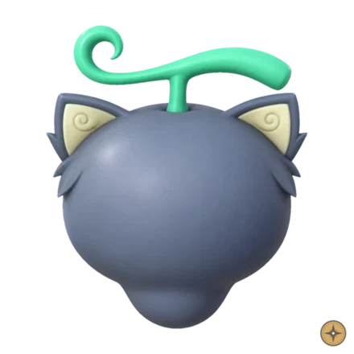
WolfCatalogue communautaireThème associé : loup. Les mouvements, dégâts, conditions d’obtention et éventuels éveils demandent une source de gameplay pour ce fruit.
 BuddhaCatalogue communautaire
BuddhaCatalogue communautaireForme géante dorée de Daibutsu. Les mouvements détaillés, l’obtention et l’éveil restent à documenter. Voir la fiche source.
 DragonCatalogue communautaire
DragonCatalogue communautaireThème associé : dragon. Les mouvements, dégâts, conditions d’obtention et éventuels éveils demandent une source de gameplay pour ce fruit.
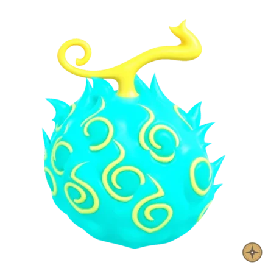
PhoenixCatalogue communautaireThème associé : phénix. Les mouvements, dégâts, conditions d’obtention et éventuels éveils demandent une source de gameplay pour ce fruit.
 Mythical WolfCatalogue communautaire
Mythical WolfCatalogue communautaireThème associé : loup mythique. Les mouvements, dégâts, conditions d’obtention et éventuels éveils demandent une source de gameplay pour ce fruit.
Rubber est l’entrée liée au Gomu. Une forme Gear 5 jouable reste à vérifier. Nos anciennes listes citaient aussi Gas, Swamp, Magnet, Shadow, Door et d’autres fruits qui ne figurent pas dans le relevé de 32 ci-dessus. Leur absence du relevé ne renseigne pas sur leur présence finale.
Le menu montre sept noms de mer. Le journal donne des compteurs pour les quatre premières. Les coordonnées et itinéraires complets restent à documenter.
Forestis correspond à la première mer dans l’index. Le nombre désigne les sites de trésor relevés dans le journal de démonstration.
Le clip montre une zone cerclée en rouge à 0:16. Le sens du marqueur reste inconnu.
Le menu de départ liste ce nom. Le rapprochement avec la Mer 3 et ses 84 sites mérite une vérification directe.
La Mer 4 affiche 122 sites dans le journal. Le lien exact avec Desolate Sea n’est pas établi dans l’index.
Le plan précède la séquence sous-marine. Il ne localise pas précisément le monstre ni la route suivie.
Biomes, routes, butin et conditions d’accès encore à documenter.
Le nom figure sur l’écran de sélection. Sa place dans la progression et son contenu restent à vérifier.
Le parcours décrit commence sur une plage jonchée d’épaves et mène à un bateau aux voiles rouges.
Riven A. Graves ouvre le parcours. Les guides situent en ville une forge, une clinique, une auberge et un vendeur de bateaux.
Nom affiché pendant la navigation. Frontières exactes inconnues.
Le wiki décrit six niveaux. Le lieu est aussi nommé dans les paroles officielles du clip.
Le catalogue recense cette zone à part. Sa relation exacte avec les étages de la prison et les routes reste à établir.
Les anciens échanges l’associent à la Mer 6. Accès, coordonnées et état jouable à confirmer.
Le wiki décrit des ruines et un ensemble d’îles flottantes. Un itinéraire fiable et ses prérequis restent à vérifier.
Les guides distinguent les bases navales des villes et prisons. Les conditions d’accès et la carte des bases restent ouvertes.
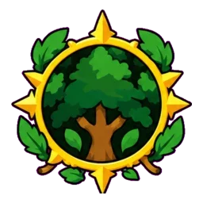

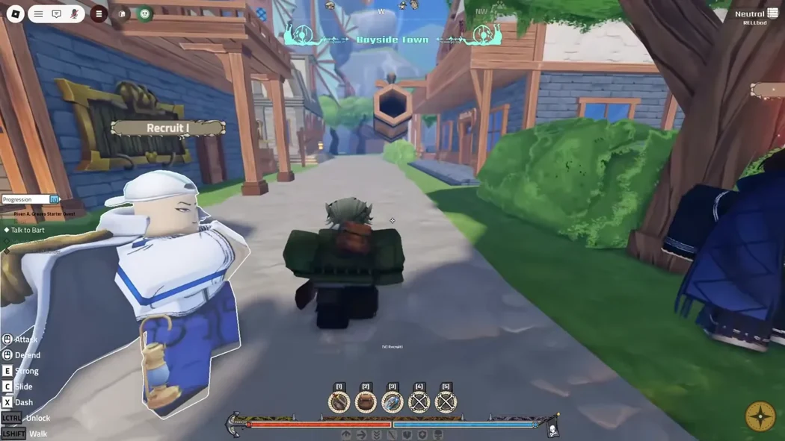

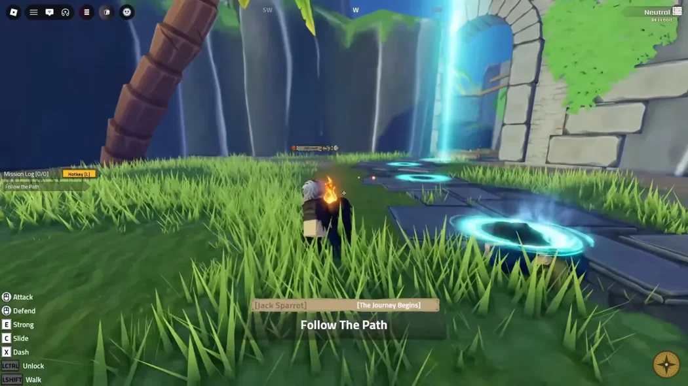
Le relevé post-Movie 3 décrit un menu plus riche que les quatre appellations de nos premières discussions.
Le wiki relève respectivement 24,68 %, 24,67 % et 5 % dans le menu montré. Ces taux concernent cette version.
Ces noms figurent dans les relevés récents. Le lien exact avec Mink, Homme-poisson et Skypiean des premières discussions reste à vérifier.
Le wiki les indexe. Les passifs et méthodes de déblocage ne sont pas uniformément documentés.
Le fil décrit des variantes surtout visuelles, dont Elf, Orc et Finman parmi les entrées associées à Human. Les effets et la possibilité de changement restent ouverts.
Les noms et initiales sont présentés comme des traits tirés via Randomize ou, pour certains noms, gagnés par quête. Les bonus rapportés touchent notamment les royaumes, l’XP et certaines classes d’armes.
Le nom Lunars apparaît dans les relevés. Une V2 ou une évolution de Skypiean demeure à vérifier.
Les extraits ouvrent au passage indiqué. Chaque vidéo reste accessible sur YouTube si le lecteur intégré ne charge pas.
Carte du clip officiel et zone cerclée.
Ouvrir au minutage sur YouTubeCarte, monstre sous-marin et avis de danger dans le clip officiel.
Ouvrir au minutage sur YouTubeSAGEz commente les cartes à partir d’images de RELL Games.
Ouvrir au minutage sur YouTubeLe chapitre officiel commence après la présentation de l’apparition et de la destruction du sous-marin.
Ouvrir au minutage sur YouTubeThe Movie 3 officiel · The Movie 2 officiel · Décembre et l’EAC dans Movie 3 · 3:04:47
Les messages de r/RELLseas servent à retrouver des détails et à suivre les discussions. Les récapitulatifs de joueurs peuvent être révisés quand de nouveaux extraits apparaissent.
Le fil décrit une ouverture par vagues, une progression distincte et un passage envisagé de l’EAC à la PAC. Les conditions actuelles de Gold et Silver dépendent des annonces du serveur.
Le post rapproche des emblèmes et des groupes locaux. Ember Pirates et Ivory Smiths sont placés en Mer 1, Jade Moon et Sunset Fury en Mer 2. Les mers et orthographes de certaines autres entrées sont signalées comme incertaines.
Les réactions abordent la création de personnages, la monétisation et le peu d’extraits sur certains fruits et sur le Haki en combat.
Les joueurs débattent du temps laissé aux tests et du silence sur le calendrier. Des observations de fréquentation sur Roblox ne permettent pas d’établir si des tests privés se tiennent.
Décembre était une fenêtre évoquée après Movie 3. Les fils de novembre discutent d’un report, sans fournir de jour officiel ni de preuve d’ouverture.
EAC/PAC · Emblèmes · Réactions à Movie 3 · Attente des tests · Discussion du 26 novembre · Annonce de RELL Games sur Movie 3
Le menu Constellation de Movie 3 organise les statistiques, le potentiel, les talents, les capacités et le Haki. Le wiki relève cinq rangs par métier, des nœuds d’outils et une carte de maîtrise en fin de branche.
La pêche suit une progression de cannes et d’appâts. La cuisine réutilise les prises et autres ingrédients dans des recettes. Le catalogue de Movie 3 documente les poissons et recettes relevés.
Les arbres distinguent le travail des matériaux, la coupe et la collecte de minerai. Les outils relevés incluent des haches, des pioches et des pelles. Movie 3 montre également la forge, les améliorations d’armes et la construction du navire.
Le relevé associe la navigation aux boussoles, à la chasse au trésor et à une cape à la maîtrise. La branche vol comprend des nœuds de serrures et de crochets.
L’arbre comprend des nœuds de potions et de médecine. Movie 3 montre aussi des maladies. Les recettes, déblocages et conditions précises de soin se vérifient dans les fiches individuelles.
Index des 199 entrées de talents avec filtres et fiches individuelles · Catalogue des objets de Movie 3
Le projet visait un capitaine agressif façon Xebec ou Shanks, avec une signature visuelle de Haki, de la mobilité et un finisher.
Go D. Zilla pour casser l’élan d’un groupe, Julius C. Zar pour créer une fenêtre de pression et une carte de détection pour repérer l’adversaire. Tester le rayon et les délais dès que possible.
Détection ou Future Sight, épée lourde si le rythme convient et bonus au dégainage d’après l’ancienne fiche de Nap O. Leon. La possibilité et les règles du dual-wield restent à vérifier.
Base sans fruit, avec Rubber comme piste si une forme Gear 5 est montrée en jeu. Les effets visuels de Haki et les buffs de combat peuvent se régler séparément dans les anciennes présentations.
Index des talents et cartes de métier · Inventaire des objets montrés dans Movie 3
 Sir PercivalNom recensé
Sir PercivalNom recensé KanaloaNom recensé
KanaloaNom recensé